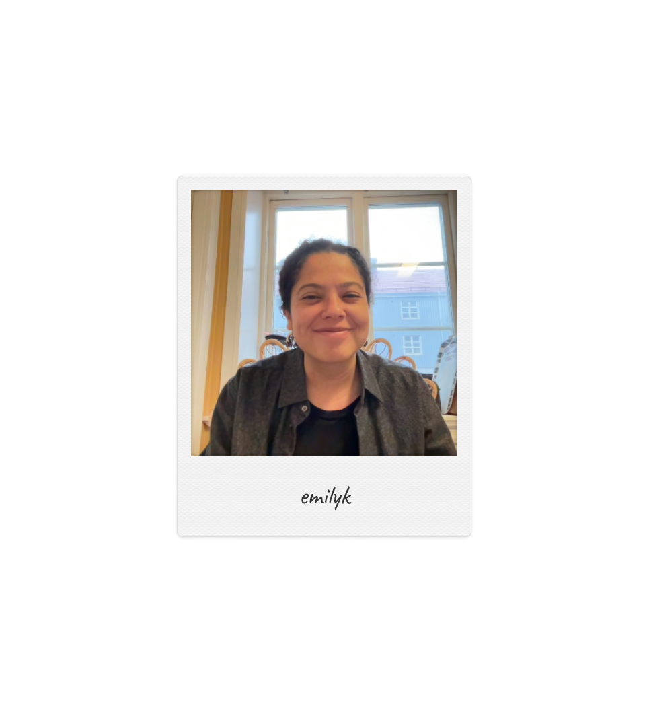

So, let's get right to it.
Who is Emily Kolar?
- 38 yrs old
- Born in Honduras
- Raised in Austin, TX (United States)
- Currently living in Malmö and Göteborg
- Speaks 3 languages (Swedish, English and Spanish)
Here's a little more information about me.
My story is a little different than most. I was born in the capital of Honduras, but adopted by an american family with roots from the Czech Republic when I was very young. So, I left Central America and all that I once knew and grew up in a large family in the US. I am the middle child of a family with 5 children. Naturally, there was always a lot going on in our house.
Both of my parents have family heritage from the Czech Republic and studied in Prague while young. Several (mostly older) memebers of our family speak/spoke Czech. At one point before passing, my maternal grandmother simply forget how to speak English. My father was an interior architect, architect with his own firm and my mother worked as part of the RnD team for the Pearson publishing company. So language, art and travel have pretty defined much of my life.
Right before graduating from high school, I happened to meet a Swede, which lead me to Göteborg. And so here I am living in Sweden. I like it so much that I haven't moved back, and I don't see myself doing so anytime soon.
